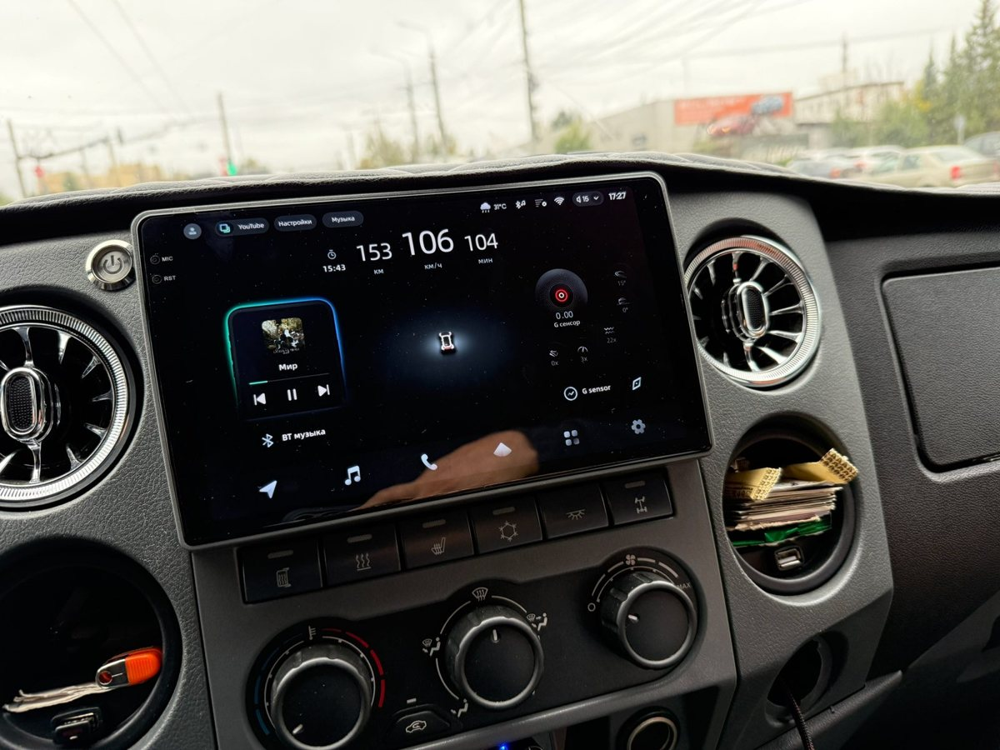
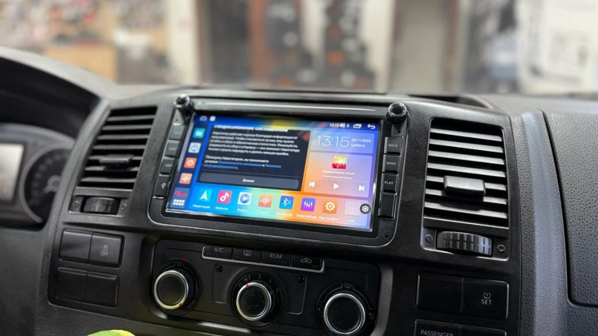
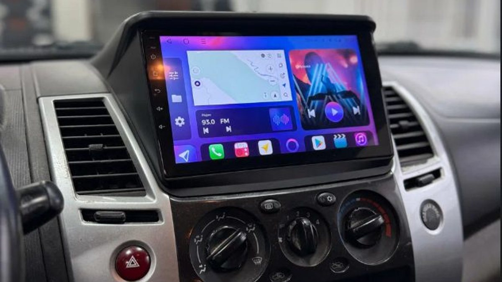

Первые две недели вы были довольны. Большой экран, навигатор, музыка с телефона, всё за сумму, на которую у соседа по гаражу стоит одна рамка. А потом пришло первое утро с минусом. Вы садитесь в замёрзшую машину во дворе, поворачиваете ключ, а экран показывает логотип. Минуту. Вторую. Вы уже выехали со двора, а магнитола только просыпается и ищет спутники.
Китайская андроид магнитола без имени редко ломается сразу. Её проблемы проявляются постепенно, и к концу месяца их набирается целый список.

В карточке товара обещали много памяти, мощный процессор и экран высокой чёткости. Первые дни вы этого не проверяете, да и незачем: устройство пустое, приложений мало, всё летает. Рамку подогнали, где-то подклеили, провода спрятали за панель.
Это самый опасный период. Возвращать товар ещё можно, но кажется, что не за что. Отзыв с пятью звёздами вы пишете как раз сейчас – и следующий покупатель верит ему так же, как вы верили чужим.
Вы поставили навигатор, музыку, пару мессенджеров. Подключили камеру. И экран стал отвечать с задержкой: нажали – ждёте. Карта дёргается на поворотах, музыка прерывается, когда приходит сообщение.
Часто выясняется, что памяти внутри меньше, чем было написано. Специальные приложения для проверки железа нередко показывают совсем другие цифры, чем в карточке товара: система сообщает то, что ей прописали, а не то, что стоит на плате. Спорить с продавцом об этом бесполезно: в его описании всё сходится.

Навигация теряется в центре города между домами и на мостах через Волгу, потому что модуль спутников слабый. Радио на трассе М8 в сторону Костромы шипит там, где штатная магнитола ловила спокойно. Экран на низком солнце бликует так, что карту не видно. Звук вроде бы есть, но громче середины динамики начинают хрипеть.
Кнопки на руле не работают, потому что переходник для вашей машины к ней не прилагался, а универсальный «настроился» через раз. На морозе устройство загружается дольше, а иногда сбрасывает настройки звука и забывает телефон.
И почти всегда – тишина от продавца. Обновлений прошивки нет, инструкция на ломаном русском, спросить некого.
Дело не в том, что в Китае не умеют делать магнитолы. Хорошие Android-магнитолы тоже собирают там. Разница в том, на чём экономят. Чтобы поставить низкую цену, экономят на модулях, которые вы не видите на фото: память, приёмник спутников, радиотракт, усилитель звука, качество экрана. Ещё экономят на прошивке и поддержке.
Фото в карточке у дешёвой и нормальной магнитолы может быть одинаковым до последней иконки. Отличается то, что под пластиком.
Если магнитола уже стоит, проверьте её сразу, пока не закончился срок возврата: поставьте приложение для проверки железа, загрузите те программы, которыми пользуетесь каждый день, и поездите неделю. Если тормозит в первый же месяц, дальше будет только хуже.
Если ещё выбираете, смотрите не на цену и картинку, а на бренд с понятной прошивкой, на рамку и переходник именно под вашу машину. Это то, что решает, будете ли вы через месяц радоваться или ругаться в замёрзшем салоне.
Мы в Ярославле – студия «Автостиль», проспект Октября, 82б. Подберём Android-магнитолу под вашу машину, установим и настроим, а на работы и оборудование даём гарантию. Подробнее – на странице про Android-магнитолы, телефон +7 902 220-75-55.